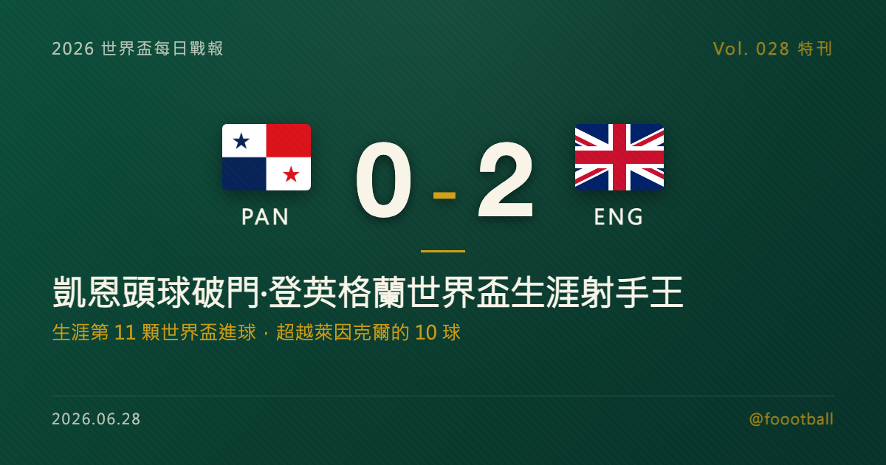

凱恩的第 11 球：英格蘭世界盃頭號射手，與那座等了一個世代的冠軍
2026 世界盃 L 組末輪，英格蘭 2-0 巴拿馬，隊長凱恩第 67 分鐘頭球破門，攻入個人世界盃生涯第 11 顆進球、超越萊因克爾的 10 球，登上英格蘭世界盃史上頭號射手。這篇特刊講清楚：這顆進球的歷史巧合、凱恩的世界盃之路、他遲來的首座冠軍，以及這支被看好的英格蘭，能否終結 1966 年以來的等待。

2026 世界盃特刊｜Vol. 028 番外
有些紀錄是靠一個夜晚誕生的，有些紀錄則是用一整個生涯堆疊出來的。哈利·凱恩（Harry Kane）在 MetLife 球場頂進的那顆頭球，屬於後者——它不只是一場 2-0 的其中一球，而是一段從 2018 年延續至今、橫跨三屆世界盃的累積，終於在這一刻，把英格蘭世界盃史上最會進球的人，換成了他的名字。
一、又是巴拿馬：第 11 球的歷史巧合
2026 年 6 月，東盧瑟福。英格蘭 L 組末輪面對巴拿馬，下半場貝林漢（Jude Bellingham）先在第 62 分鐘破門，緊接著第 67 分鐘又從邊路傳中，凱恩高高躍起、頭球頂進。這顆進球是凱恩個人世界盃生涯的第 11 球，超越了萊因克爾（Gary Lineker）保持三十多年的 10 球，讓他正式成為英格蘭世界盃史上頭號射手。
歷史在這一刻開了一個有趣的玩笑：八年前的 2018 年俄羅斯世界盃，凱恩正是在對巴拿馬的小組賽中上演帽子戲法——那一屆他攻入 6 球、拿下世界盃金靴。如今 2026 年，他又是在面對巴拿馬時，攻進了改寫英格蘭歷史的第 11 球。同一個對手，見證了凱恩世界盃旅程的起點高光與生涯里程碑，這樣的巧合，幾乎像是劇本寫好的。
而把他送上紀錄的，是英格蘭新生代的代表貝林漢——一個先進球、再送出助攻的下半場，象徵了這支球隊「老隊長 + 新核心」的結構：紀錄由凱恩寫下，但球，是年輕人傳到他頭上的。
二、從金靴到紀錄：凱恩的世界盃之路
凱恩這 11 顆世界盃進球，是分三屆累積而來的。
2018 年俄羅斯，是他爆發的一屆：6 顆進球（含對巴拿馬的帽子戲法）讓他奪下金靴，並帶領英格蘭睽違 28 年重返世界盃四強。2022 年卡達，他攻入 2 球——包括 8 強對法國時罰進的一球；但那場八強戰，英格蘭最終飲恨出局，凱恩自己更在比賽尾聲錯失了一記足以扳平的點球。對一位頂級射手而言，最殘酷的時刻往往不是沒有機會，而是機會擺在腳下、卻沒能把握——那一夜，成了他世界盃記憶裡最苦澀的一頁。來到 2026 年，他在小組賽再進 3 球：對克羅埃西亞的梅開二度，先讓他追平萊因克爾的 10 球；對巴拿馬的頭球，則一舉超越。6 加 2 加 3，正好 11。某種程度上，這顆破紀錄的進球，也像是對四年前那記失點的一種回應。
事實上，「進球」這件事，早已是凱恩的代名詞。他不只是英格蘭的世界盃射手王，更是整個英格蘭國家隊史上的頭號射手——早在 2023 年 3 月作客義大利的比賽中，他就以個人第 54 顆國家隊進球超越了魯尼（Wayne Rooney）的 53 球紀錄；如今他的英格蘭生涯進球已累積到 82 球。一個球員能同時握有「國家隊總進球」與「世界盃總進球」兩項隊史紀錄，凱恩在英格蘭足球史上的位置，已經無需爭辯。
而更難得的是，凱恩早已不只是一個待在禁區裡的終結者。生涯後期的他，逐漸演化成一名會回撤接應、為隊友送出致命直塞的「偽前鋒」——既是射手，也是策動者。本屆對巴拿馬一役就是縮影：他既參與了進攻的串聯，最後又親自把握機會、頭球破門。對英格蘭而言，凱恩的價值從來不只寫在進球數字上，更在於他用回撤與分球，把整條鋒線連成一氣的方式——這也是為什麼，即便已經 32 歲，他在這支球隊裡依然無可取代。
三、破除冠軍荒之後：遲來的第一座獎盃
然而，在凱恩這份近乎完美的進球履歷背後，曾經有一個刺眼的空白：冠軍。
長達整個熱刺（Tottenham）時期，這位頂級射手在俱樂部層級顆粒無收——進球無數、紀錄一堆，獎盃櫃卻是空的。更殘忍的是，他不是沒摸到冠軍的門檻，而是一次又一次被擋在門外：兩屆歐洲國家盃決賽（2021 年在溫布利對義大利、2024 年在柏林對西班牙）都以英格蘭隊長身分含淚落敗，熱刺時期的歐冠決賽、聯賽盃決賽也都鎩羽而歸。在拜仁奪冠之前，他生涯已多次在大大小小的決賽中飲恨。「最會進球、卻拿不到冠軍」，一度成為外界對他最殘忍的評價。
這個魔咒，直到他離開英格蘭、轉戰德國才被打破。2025 年 5 月，凱恩隨拜仁慕尼黑（Bayern Munich）拿下德甲冠軍，捧起個人職業生涯的第一座重要錦標，同時還是該季德甲的最佳射手。等了超過十年，他終於有了一座冠軍獎盃。
但有一個空白，至今仍未被填上：他從未為英格蘭國家隊贏得任何一項錦標。對凱恩而言，個人紀錄已經拿到手軟，俱樂部冠軍也已破蛋；唯一還缺的那一塊，是為「三獅軍團」捧起一座大賽冠軍——而這，恰恰是 2026 這屆世界盃，擺在他面前最大的命題。
四、這支英格蘭，與 1966 的執念
英格蘭對世界盃冠軍的渴望，是有重量的——因為他們已經等了一個世代又一個世代。
英格蘭唯一一次世界盃奪冠，是 1966 年在本土捧杯；此後將近六十年，他們再沒能登頂任何一項大賽。近的傷口尤其鮮明：歐國盃他們連續兩屆（2021、2024）打進決賽，卻連續兩屆屈居亞軍。「永遠的熱門、永遠差一步」，幾乎成了現代英格蘭足球的集體宿命。
但 2026 年的這支英格蘭，被認為是近年最具厚度的一屆。除了正值生涯數據巔峰的凱恩，他們還擁有貝林漢這樣的世界級中場核心——後者本屆不僅在揭幕戰對克羅埃西亞破門、又在對巴拿馬一役先進球再助攻，更在小組賽期間成為英格蘭史上最年輕達成 50 次國家隊出場的球員。一支「老隊長正值高峰、新核心開始扛旗」的球隊，讓英格蘭在賽前的奪冠賠率中穩居前列，與法國、西班牙、阿根廷等隊並列最被看好的一檔。
只是，「被看好」這三個字，對英格蘭從來都是一把雙面刃。過去十幾年，他們幾乎屆屆帶著一份星光名單出發，卻屆屆在關鍵時刻栽在心魔上——點球大戰的陰影、領先後的保守、大賽決賽的怯場，讓「黃金世代」成了一個帶著苦味的詞。對這支球隊而言，真正的對手往往不在場上，而在那段不斷重演的歷史裡。而凱恩，正是背負這份重量最深的人：今年 32 歲的他，職業生涯能再披三獅戰袍逐夢的大賽，恐怕已屈指可數。換句話說，2026 這屆世界盃，對凱恩個人而言，很可能就是離那座國家隊冠軍最近、也最關鍵的一次機會。
淘汰賽首輪，英格蘭將於 7 月 1 日在亞特蘭大對上首度闖進淘汰賽的黑馬民主剛果。紙面上這是一場英格蘭佔盡優勢的對決，但對凱恩和這支球隊而言，真正的考驗在更後面——能不能把「史上最強的進球數據」，換成那座 1966 年後就再沒碰過的獎盃。凱恩已經證明了自己會進球、能破紀錄、也終於嚐到冠軍的滋味；剩下的最後一題，是能不能在退役之前，帶領英格蘭走完那段等了一個世代的路。
常見問題
Q：凱恩破的是什麼紀錄？是單屆世界盃最多進球嗎？ A：不是。凱恩破的是英格蘭「世界盃生涯總進球」紀錄——這顆是他世界盃生涯第 11 球，超越萊因克爾保持的 10 球，是跨屆累計的生涯紀錄，本屆他到小組賽結束共攻入 3 球。這並非單屆紀錄：若只看英格蘭球員，單屆最多仍是萊因克爾 1986 年的 6 球；若看世界盃整體史，單屆最高紀錄則是方丹（Just Fontaine）1958 年的 13 球。
Q：凱恩這 11 顆世界盃進球是怎麼來的？ A：分三屆累積：2018 年俄羅斯 6 球（拿下金靴，含對巴拿馬的帽子戲法）、2022 年卡達 2 球、2026 年到小組賽結束 3 球（對克羅埃西亞梅開二度、對巴拿馬頭球破紀錄），合計 11 球。
Q：英格蘭上一次贏得大賽冠軍是什麼時候？ A：1966 年世界盃，在本土奪冠，是英格蘭唯一一座世界盃。此後英格蘭再未贏得任何大賽，最接近的兩次是 2021 與 2024 連續兩屆歐洲國家盃決賽，但都以亞軍作收。2026 年的英格蘭被視為奪冠熱門之一，淘汰賽首輪將於 7 月 1 日在亞特蘭大對上民主剛果。
Tags: 世界盃, 2026世界盃, 凱恩, 英格蘭, 貝林漢, 萊因克爾